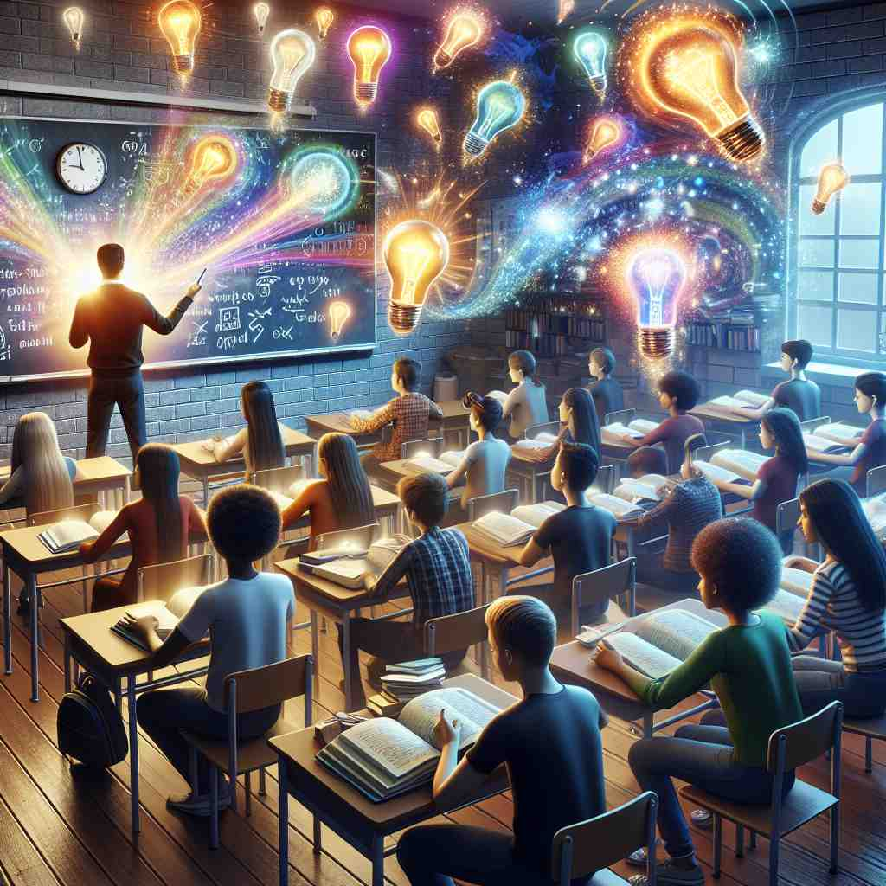
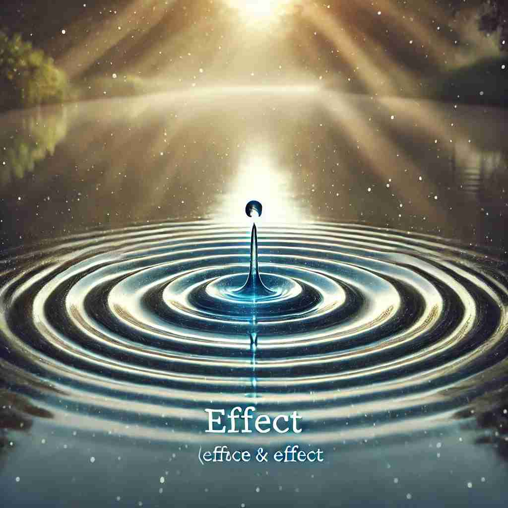

🗝️ n. a change that is caused by something
🖼️ 在一个科学实验室里，科学家把一种化学物质添加到溶液中。几分钟后，溶液的颜色逐渐变成蓝色。科学家记录下这个变化，称之为化学物质的'effect'。
🔍 想象'effect'是一种波纹，从中心向外扩散产生'影响'。无论是法律效力、个人印象、自然现象，还是个人物品，都可以看作是这种'影响'的不同体现。通过联想这个核心的'影响'概念，你可以更好地理解和记忆'effect'的各种用法。

💬 The doctor explains the positive effect of treatment on the patient.

💬 The farmer sees the destructive effect of the storm on his cornfield.

💬 The teacher will show an effect of light on plants.

💬 The drop of water can create an effect on the surface of the lake.
🗝️ n. the state of being in operation or use
🖼️ 在一个热闹的商场内，消防警报突然响起。商场管理人员迅速实施疏散措施，将其称为警报系统的'effect'。
💬 The new regulations will come into effect next month.
❓ 某事物产生"影响"的状态
🗝️ n. an impression produced in the mind of a person
🖼️ 在一个艺术展览中，一幅生动的画作吸引了参观者的注意。他们愣住了，被画作深深打动，这种心理感受被称为画作的'effect'。
💬 The movie had a profound effect on the audience.
❓ 某事物在人心中产生的"影响"
🗝️ n. a physical phenomenon, typically named after its discoverer
🖼️ 在物理课堂上，教师讲解了'多普勒效应'。当车速变快时，学生们听到的声音频率变化，正是这个物理现象的'effect'。
💬 The greenhouse effect is causing global warming.
❓ 某种现象对环境产生的特定"影响"
🗝️ n. personal belongings
🖼️ 在一家机场失物招领处，一名旅客正在寻找他丢失的行李。他向工作人员描述了他个人的'effect'，希望能尽快找回。
💬 He packed up all his effects and moved out.
❓ 个人物品对一个人的生活有"影响"
🗝️ v. to bring about (a result)
🖼️ 在一个团队项目会议上，经理介绍了一个新策略。他表示，这将'effect'一个积极的改变，为公司未来的增长铺平道路。
💬 The manager hoped to effect positive changes in the company.
❓ 主动引起某种"影响"或变化
🗝️ n. special visual or sound effects in films, television, etc.
🖼️ 在一个电影制作工作室，特效专家正忙于为一部科幻大片制作惊人的视觉效果。各种炫目的'explode'和奇幻场景都是他们创造的'special effects'。
💬 The movie's special effects were impressive.
❓ 为增强视觉或听觉"影响"而添加的效果